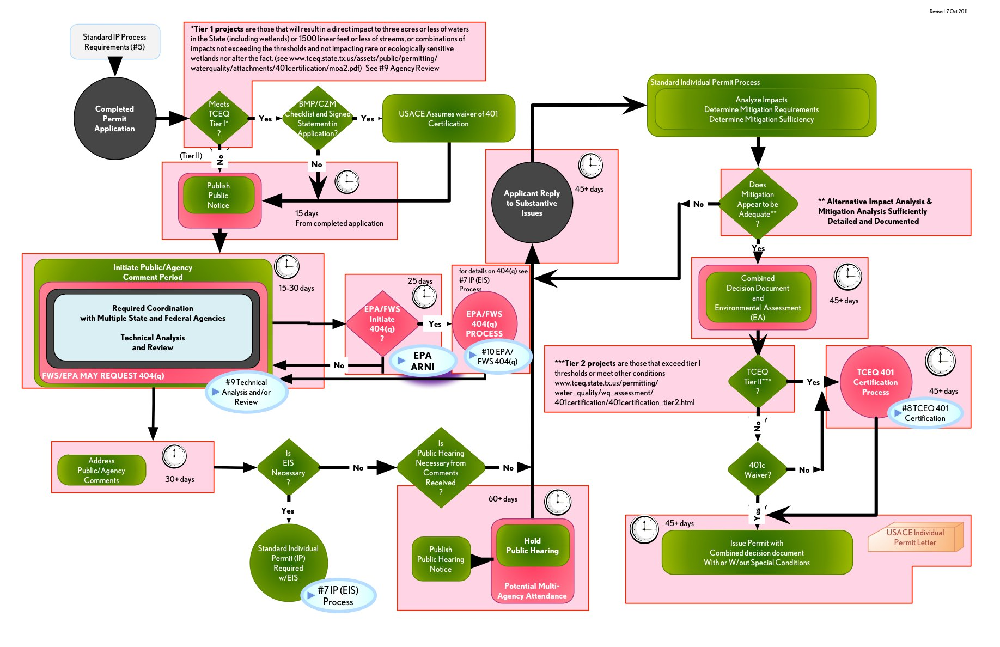

Texas/Federal Regulatory Permitting Process
Introduction
Table of Contents
Legend & Acronyms
Permit Process
#1 Main
#2 Planning
USACE Jurisdictional Determination (JD)
#3 USACE Regulatory Program Process
#4 General Permit (GP) Process
#5 Letter of Permission (LOP) Process
#6 Individual Permit (IP) Environmental Assessment (EA) Process
#7 Individual Permit (IP) Environmental Impact Statement (EIS) Process
#8 TCEQ 401 Certification Process
#9 Multi-Agency Technical Analysis And/Or Review Process
#10 404(q) Process
Attachments
USACE Permit Application
USACE Regulatory Process Flow Chart
USACE Rapanos Guidance
TCEQ Water Rights Permitting
TCEQ 401 Certification Flow Chart
EPA Aquatic Resource of National Importance (ARNI) Process
EPA 404(c) Veto Procedures Timeline
SHP - Advisory Council on Historic Preservation: Section 106 Process
FWS Threatened & Endangered Species (T & E)
TWDB Regional Water Planning Areas
TWDB Environmental Review Process for Financial Assistance
#6 IP (EA) Process
Back One
Forward One
Individual Permit Process
Standard Individual permits require individual Public Notice and NEPA documentation
